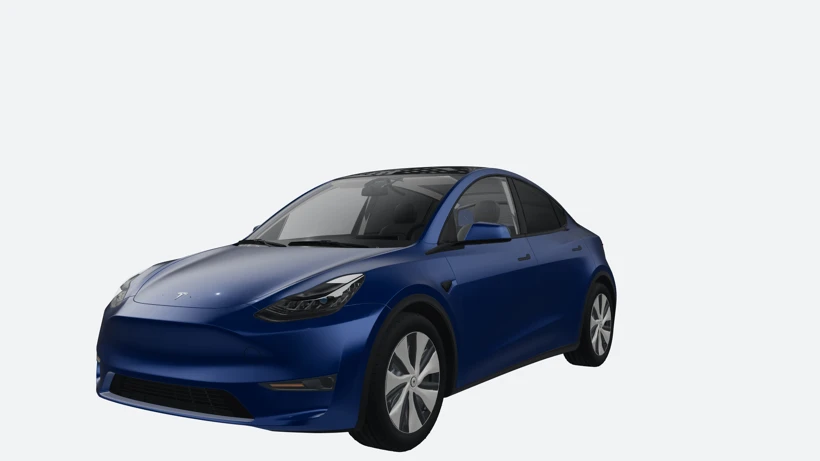
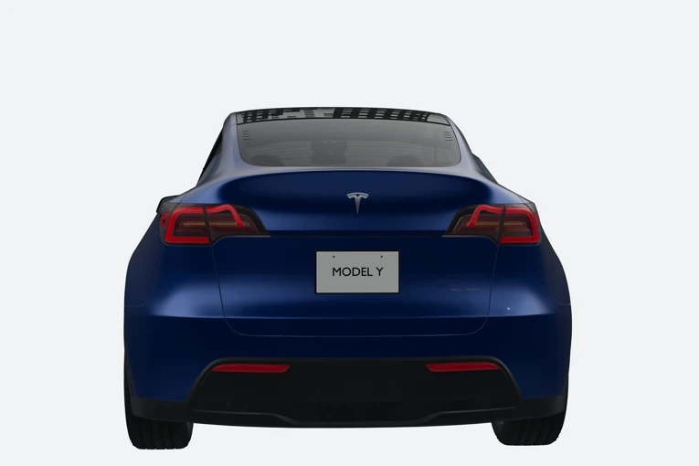
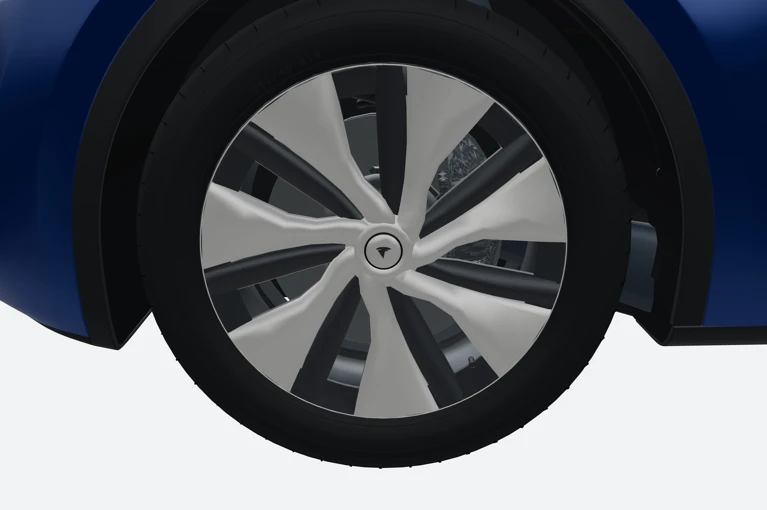

Photo benchmark
The primary reference is one blue 2023 Long Range AWD with silver 19-inch Gemini wheel covers. Twenty photographs follow the car around a turntable at 18° intervals. Eight separately framed stills cover both sides, both ends and the four corners.
The turntable originals are 3000 × 1687 pixels. The eight stills are 2500 pixels wide. This Swedish car has EU plates and a towball. The 3D model represents a five-seat US car. Carla / Spinio studio set · Vehicle specification

Front three-quarter Compare →
Rear elevation Compare →
Gemini cover Compare →How closely the exterior fits
The same 28 camera positions and photo outlines were used for all three models. Silhouette intersection over union measures their overlapping area divided by their combined area. A value of 1 means the two outlines enclose exactly the same pixels.
| Model | Mean overlap | Second mask | Contour error² |
|---|---|---|---|
| Earlier public model | 94.16% | 94.19% | 50.2 px |
| Recovered rebuild | 95.42% | 94.27% | 35.9 px |
| Current model | 95.52% | 94.24% | 35.0 px |
² Each frame contributes its 95th-percentile bidirectional boundary distance. The table gives the median across the 28 photos. Distances are scaled from the working masks into native photo pixels. The second segmentation includes more floor shadow around the tires and sill.
The 20 turntable stops share a camera and rotation axis. Refitting with one photograph withheld at a time placed the 31 visible withheld wheel centers within 6.3 pixels at the median and 14.8 pixels at the 95th percentile. The eight separate stills use individual camera fits.
Details visible in the photographs
The original alloy poked through the silver Gemini cover near the rim. A 2 mm sampling grid on the front-left wheel found alloy in front of 28.4% of sampled cover points before the correction and zero afterwards. The seven silver vanes now reach the rim. Sidewall lettering and the finish remain approximate. Inspect the wheel
The inner rear running-light guide was reshaped with the turntable photographs. Four visible endpoints across three separate 2500-pixel stills were held out of that adjustment. Their median error fell from 79.0 to 21.3 pixels. The lower bumper reflectors still sit too far inboard. Their center error on the separate rear stills is 68 pixels at the median. Moving the existing recesses outward introduced a visible ripple in the painted bumper. The published model retains the smoother fascia. Inspect the rear
At the front, the inner lamp corners register more closely than the lower intake contour. Wheel rotation and studio lighting vary between the photos and the model. Inspect the front
Factory dimensions
| Dimension | Tesla (mm) | Model (mm) | Difference |
|---|---|---|---|
| Length | 4,751 | 4,753.6 | +2.6 |
| Body width | 1,921 | 1,919.8 | -1.2 |
| Width with mirrors | 2,129 | 2,124.5 | -4.5 |
| Height | 1,624 | 1,624.0 | +0.0 |
| Wheelbase | 2,890 | 2,890.0 | +0.0 |
| Front track | 1,636 | 1,636.0 | +0.0 |
| Rear track | 1,636 | 1,636.0 | +0.0 |
| Ground clearance¹ | 172 | 172.0 | +0.0 |
¹ Tesla gives clearance with two passengers. The measurement on the model runs from its ground plane to the lowest fixed part of the battery tray. 2023 Owner’s Manual, dimensions
The collision-repair manual locates the structural measuring points and lists the distances between them. The rear drawings distinguish the two casting constructions. Tesla collision-repair manual


Reference coverage
The 91 live comparisons include the 2023 blue car, a 2023 white car, a blue 2024 from the same generation, wheel details and Tesla Design Studio renders. The source catalog also records cabin photographs, drive-unit service images, the owner’s manual, patents and rescue-sheet drawings. Concealed drivetrain geometry is approximate.
The frame review covers 203 source images. A verified label applies to the features named for that frame. A limited label identifies a specific evidence gap. Frames marked for correction have a visible discrepancy. Pending frames still need a registered render.
38 verified · 81 limited · 15 fix · 69 pending · 0 excluded. Model revision dbfa5aa777e8.
Measurements, frame notes and cameras (JSON) · Full reference catalog (JSON) · Editable Blender model and scripts (ZIP)
Supplemental 2021 reference model · Earlier photo and electric-drive study